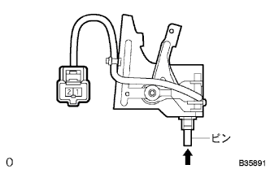

Power slide door sliding door half open stoppontrol circuit |
reference| Step 1 | Door control relay inspection |
Conduction inspection
Cut the connector B of the door control relay.
 |
Use SST (Toyota Electrical Tester) to check the conductor between the door control relay vehicle side connector L21 terminal ← → body ground.
| Terminal number | Measurement conditions | standard |
| L21 ← → Body Earth | Ferrid opening | Without conduction |
| L21 ← → Body Earth | Ferrid closing | There is an conductor |
|
| ||||
| NG | |
| Step 2 | Slide door half open stopper control ASSY single inspection |
|  |
Conduction inspection
Use SST (Toyota Electrical Tester) to check the conjunction between connector terminals.
| Terminal number | Measurement conditions | standard |
| 1 ← → 2 | When the pin is not pushed in | Without conduction |
| 1 ← → 2 | When the pin is pushed in | There is an conductor |
|
| ||||
| OK | |
| Step 3 | Front door wire LH inspection |
Conduction inspection
Cut the connector A and L of the front door wire LH LH.
 |
Use SST (Toyota Electrical Tester) to inspect the conduction between front door wires LH connector terminals.
| Terminal number | standard |
| A5 ← → L21 | There is an conductor |
|
| ||||
| OK | ||
| ||